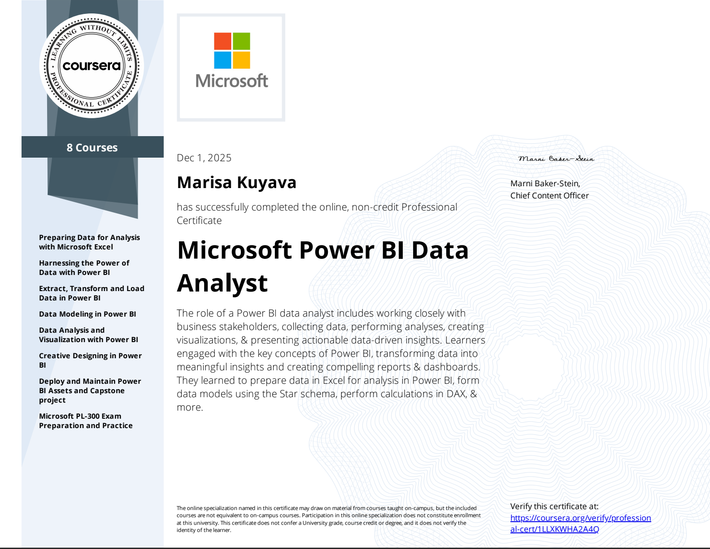
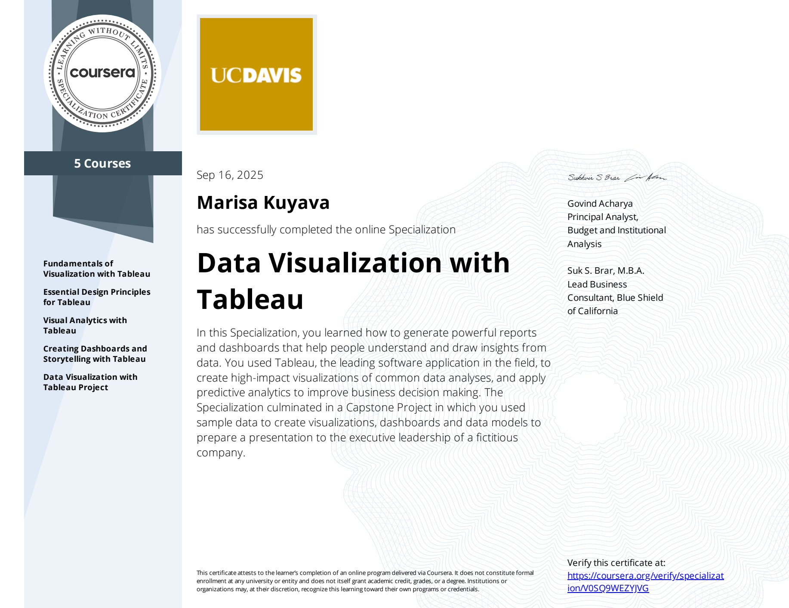
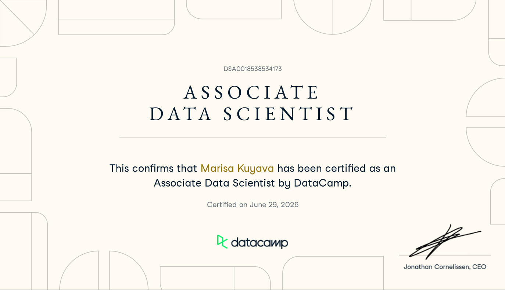
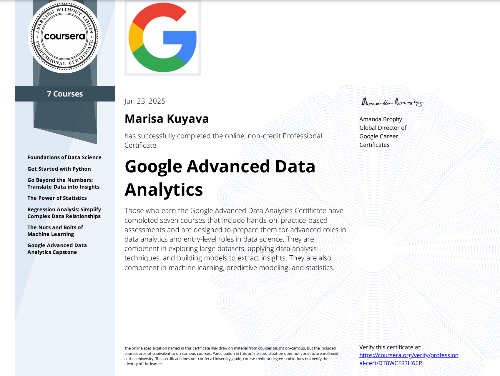
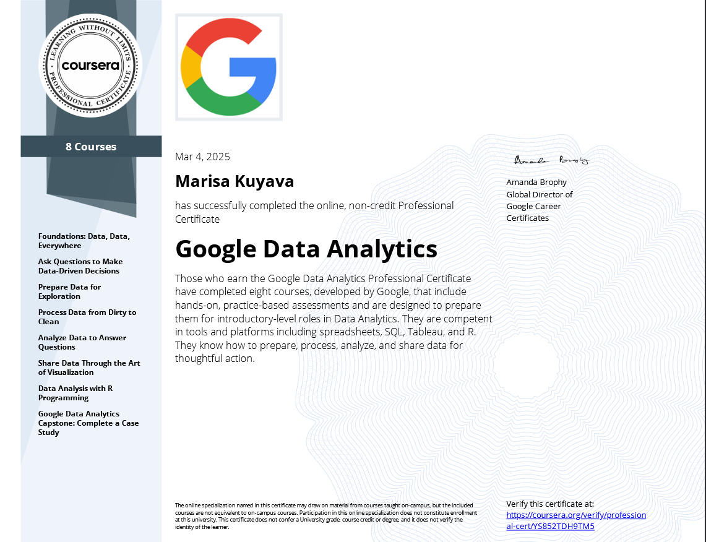

03
Certifications

BS Computer Science
Southern New Hampshire University

Microsoft Power BI
Microsoft Coursera

Data Visualization with Tableau
UC Davis Corsera

Associate Data Scientist
Datacamp

Google Advanced Data Analytics
Google Coursera

Google Data Analytics
Google Coursera